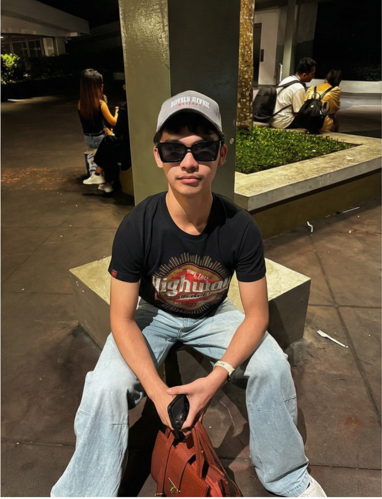

Meet Albie

Hello! My name is Albie. I am a Computer Science student with a strong interest in technology, problem-solving, and innovation. My academic journey has allowed me to explore programming, software development, and the ways technology can be used to improve everyday life.
I believe that studying Computer Science is not just about writing code — it is about learning how to think critically, analyze problems, and design solutions that can make a meaningful impact. I enjoy collaborating with others, sharing ideas, and building projects that combine creativity with technical skills.
“Technology is more than machines and code — it is a tool for creativity, connection, and shaping the future.”
Beyond academics, I am passionate about continuous learning, exploring new frameworks, and experimenting with projects that challenge me to grow. Whether it’s designing applications, understanding algorithms, or exploring emerging fields like artificial intelligence, I strive to keep expanding my knowledge and skills.
This page serves as a reflection of my journey as a Computer Science student — documenting the projects I pursue, the skills I develop, and the experiences that shape me. I hope it inspires others to embrace curiosity, innovation, and the exciting possibilities of technology.